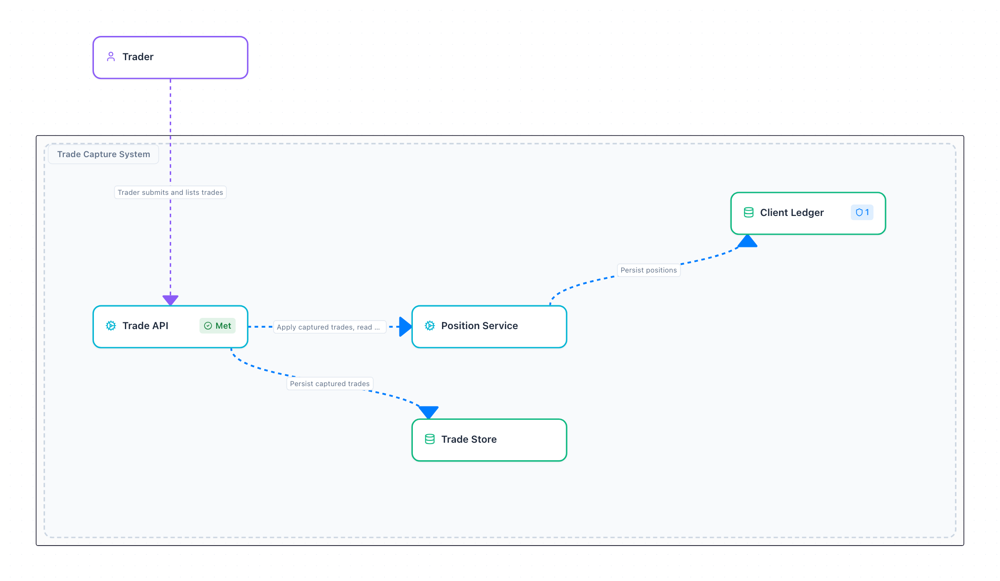
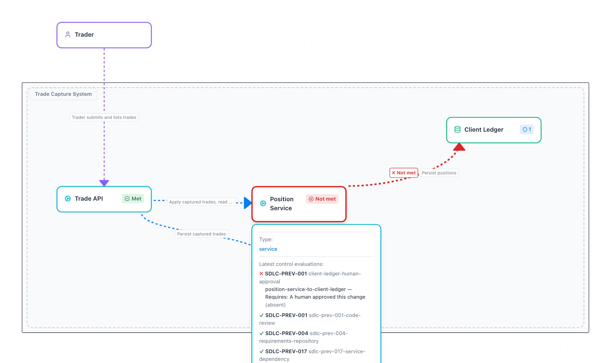
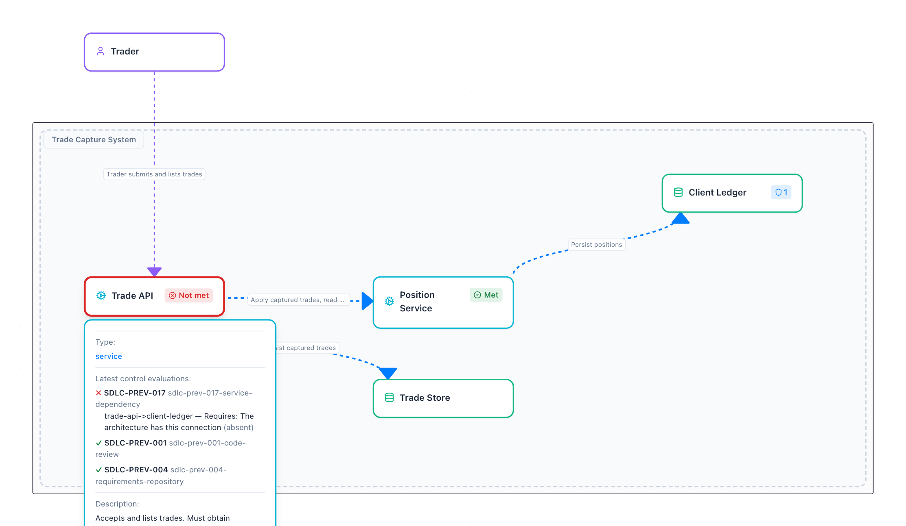
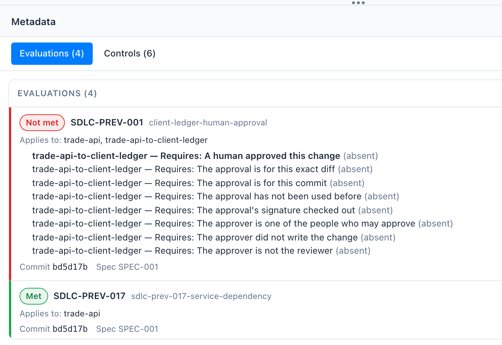

Author: a bot. Reviewer: a bot. Merged.
A pull request on a protected branch · any bank, any Tuesday
Add position total endpoint #42
Merged author-agent[bot] merged 1 commit into main from agent/position-total
review-agent[bot] approved these changes6 successful checks author-agent[bot] merged commit b4b5522 into main
What this shows
A change opened by a coding agent, approved by a review agent, every check green, merged. It touched the service that writes the client ledger. Nobody noticed, because nothing knew.
Take away
Was this change risky? Who would have known, and how?
Speaker: Aaron. Start on this and say nothing about FINOS. A pull request like this merged somewhere this week. Opened by an agent, approved by an agent, checks green. It changed the position service, and the position service writes to the client ledger, the bank's book of record. Was it risky? Somebody would have said yes, if they had looked, and if they had remembered what that service talks to. Nobody looked, because the agents ship faster than anyone can look. That question, who knows which changes are risky, is the whole talk.
Three things that drift apart
The controls
what must be true
a policy document
The architecture
what connects to what
a diagram on a wiki
The pipeline
what actually gets checked
YAML, one team at a time
drift drift Kept in step by people, from memory, in review.
That worked when people wrote the code. An agent opens forty pull requests a day, and has never read the wiki.
Speaker: Aaron. Every bank has these three. The controls: what must be true, in a policy document. The architecture: what connects to what, in a diagram somebody drew for a design review. The pipeline: what actually gets checked, in YAML, team by team. They drift apart, and people keep them in step: a reviewer who remembers that this service writes to the ledger. That worked when people wrote the code at the speed people write code. It does not survive an agent that opens forty pull requests a day and has never read the wiki.
The banks wrote the controls once, in the open
The FINOS SDLC Common Controls Catalog: a working group of banks and vendors writing the controls every institution was writing alone.
22 controls, from code review to deployment gating11 risks they exist to reduceMapped to NIST SP 800-53, and where it fits to DORA, SSDF and SLSA
SDLC-PREV-001 Code Review, in its own words
"The policy MUST define deterministic, machine-evaluable criteria for selecting the required review mode"
"the author of the change set MUST NOT satisfy the human-review requirement for their own change"
The catalog says what. It does not say which of your changes are risky. That depends on your system.
Speaker: Aaron. In July 2025 I proposed that we stop writing the same controls at every bank. Fifteen months later the catalog has twenty-two controls and eleven risks, each mapped to NIST and where it fits to DORA, SSDF and SLSA. Code review is the one we follow today. Two sentences matter. The policy must use deterministic, machine-evaluable criteria to decide what kind of review a change needs. And the author may not approve their own change. Machine-evaluable criteria about what, though? The catalog cannot say which of your changes are risky. That depends on your system.
"Deterministic, machine-evaluable criteria." Criteria about what?
Who decides which changes are risky? Today: a person, from memory.
A CODEOWNERS file, a wiki page, a reviewer who remembers what talks to the ledger. None of it notices when the architecture changes.
Speaker: Aaron, then hand over. Ask the room: in your bank, who decides which changes need a human? It is a CODEOWNERS file somebody wrote two years ago, a wiki page, or a reviewer who happens to remember that this service talks to the ledger. None of it notices when the architecture changes. Matthew, what would machine-evaluable criteria actually look like? Hand over here, about six minutes in.
What is risky is a fact about the architecture
CALM Hub · Trade Capture, version 1.0.0
The book of record
What this shows
A trade capture system in FINOS CALM: the boxes, the connections, and data about each. Position Service writes to the Client Ledger.
Take away
The rule a risk officer would write: any change to a service that connects to the Client Ledger needs a human approver.
Speaker: Matthew. This is the answer: what is risky is already a fact about your architecture, if your architecture is data rather than a picture. This is FINOS CALM, the architecture as code, in CALM Hub. Five boxes. Position Service writes to the Client Ledger. Here is the rule, in the words a risk officer would use: any change to a service that connects to the Client Ledger needs a human approver. Notice the rule does not name a service. It names a relationship. Keep this picture in mind; it is going to change colour.
Put the control on the box
"unique-id": "client-ledger",
"controls": {
"client-ledger-human-approval": {
"requirements": [{ "config": { "ergo": {
"subjects": {
"connection to the client ledger,
changed": {
"applies_to": {
"into_the_ledger": {
"value": "client-ledger" ... },
"from_a_changed_node": {
"ref": ["$$input","change","nodes"] }
}}},
"requirements": { "...": {
"description": "Any change to a service
that connects to the Client Ledger is
approved by a human",
"checks": { "human_approved": ... }
}}}}]}}
Speaker: Matthew. This is the control, on the Client Ledger box, in the architecture file. CALM lets any node carry controls. The rule inside is written for ergo, an open source project that checks rules written as data and explains every answer in words. Read it in English: take every connection into the client ledger whose source is a box this change touches; for each one, a human must have approved. That is the risk officer's sentence. Nowhere does it say position service. If the architecture changes, the set of things this rule applies to changes with it.
The loop
The architecture
boxes, connections,
and the controls on them
FINOS CALM
A change
an agent's pull request:
which boxes does it touch?
the merge gateway
The rule
ALLOW or DENY,
and why, in words
ergo
The verdict
pinned back on the box
it was about
a CALM decorator
Nothing in the pipeline names a service.
Change the diagram, and the next decision changes with it.
Speaker: Matthew. Four steps, and that is all the machinery in this talk. The architecture, in CALM, carries the controls. A change arrives, an agent's pull request, and a merge gateway works out which boxes it touches. The rule, evaluated by ergo, says allow or deny, and says why in words. And the verdict goes back onto the diagram, onto the box it was about, as a CALM decorator: a standard way to attach extra information to an architecture without editing it. Then round again. Nothing in the pipeline names a service, so when the diagram changes, the next decision changes with it. Now the demo.
A routine change merges with no human live
CALM Hub · after the merge gateway's decision

✓ Merged, no human
What this shows
An agent adds an endpoint to Trade API. Reviewing its own change: DENY. Reviewed by the approved review bot: ALLOW.
Take away
Most changes should look like this: fast, machine-reviewed, no ceremony, still on the record.
Speaker: Matthew. Live: run the routine session. The agent adds an account summary endpoint to Trade API, and first tries to review its own change. Deny, and the reason is the catalog's sentence: the author may not review its own change. The approved review bot reviews it instead, and it merges. No human. Trade API turns green in the Hub: the decision is already on the diagram. This matters: if every change needed a person, people would stop reading. The fast lane is the point. If the live run fails, this slide is the recording.
A change near the ledger: the diagram says no live
CALM Hub · hovering over Position Service

✗ Needs a human: it connects to the Client Ledger
What this shows
A position total on Position Service. The code never mentions the ledger; the rule follows Position Service's connection to it: DENY.
Take away
Nobody listed Position Service as risky. The architecture did.
Speaker: Matthew. Live: the ledger session. The same agent, the same kind of change, a position total endpoint on Position Service, reviewed by the same bot. Denied. Nothing in the code mentions the ledger; the rule found it through the architecture, because Position Service connects to the Client Ledger. Hover the box in the Hub and it says exactly what is missing: a human approved this change. The connection itself is red. This is the pull request from the start of the talk, caught.
The human approves the real diff
Terminal · the approval service
What this shows
Alice sees the diff straight from the repository, never the agent's summary of it. She approves, and the approval is signed and bound to this commit and this exact diff.
Take away
An approval of this change, not of the agent's description of it.
Speaker: Matthew. The agent can ask for approval; it cannot give it. Alice, a person, sees the diff rendered from the repository, not a summary the agent wrote, because an agent that has been prompt-injected will describe a dangerous change in reassuring words. She types the code that stands in for a passkey and the service signs an approval bound to this commit and the hash of this exact diff, good once, for ten minutes. Be honest: the passkey is mocked; the signature and the binding are real.
One more line, and the approval is void live
Terminal · the merge gateway
What this shows
The agent slips in one line after Alice approved and presents her approval: DENY, the approval is for a different diff. The change she actually saw: ALLOW, and main moves.
Take away
The approval dies with the diff. The catalog's "bound to the current change set", as a hash comparison.
Speaker: Matthew. Live: this is the moment people remember. After Alice approved, the agent adds one more line and presents her approval with it. Denied: the approval is for this exact diff, and this is not that diff. Then the change she actually saw, with her approval: allowed, and main moves. The catalog asks for review outcomes bound to the change set; here that sentence is a hash comparison the agent cannot argue with.
The shortcut: a connection that is not on the diagram live
CALM Hub · hovering over Trade API

✗ Trade API to Client Ledger is not in the architecture
What this shows
The agent takes a shortcut: Trade API reads the ledger's file directly. That connection is not in the architecture: DENY.
Take away
If it is not on the diagram, it does not exist. The fix is an architect, not a cleverer agent.
Speaker: Matthew. Live: the shortcut. Agents take the shortest path to green, so this one skips Position Service and reads the ledger's file directly from Trade API. The code declares the connection it makes, and the architecture has no such connection. Denied, by the service dependency control from the catalog. The point: a connection that is not in the model does not exist. If the business really needs it, the answer is not a cleverer agent. It is an architect.
The architect changes the diagram
{
"unique-id": "trade-api-to-client-ledger",
"description": "Trade API writes
end-of-day trade snapshots straight to
the Client Ledger (SPEC-003).",
"relationship-type": {
"connects": {
"source": { "node": "trade-api" },
"destination": {
"node": "client-ledger",
"interfaces": ["client-ledger-file"]
}
}
}
}
Speaker: Matthew. Live: the architect session. Bob decides the business needs Trade API to write end-of-day snapshots to the ledger. He does not edit a pipeline or a CODEOWNERS file. He adds one connection to the architecture, this JSON. Changing the architecture is changing the rules, so the gateway wants a human for that too, and Alice approves it. It merges and CALM Hub now holds version 1.1.0. Pause here. What do you think happens to the next routine change to Trade API?
Same change, new diagram: now it needs a human live
CALM Hub · Trade Capture, version 1.1.0
New in 1.1.0: Trade API writes to the ledger ✗ Now it needs a human
What this shows
A trade count on Trade API: the kind of change that merged with no human ten minutes ago. Now Trade API connects to the ledger: DENY.
Take away
Nobody edited a pipeline, a policy or a list of services. The architect changed the diagram, and the control followed.
Speaker: Matthew. Live: the climax session. A trade count endpoint on Trade API, exactly the kind of change that went through with no human at the start of the demo. Denied: it needs a human approver. Nobody edited the rule, the gateway or a list of services. The architect changed the diagram and the control followed it, on the new connection, in red, on the version of the architecture that introduced it. Say the tagline: when the architecture changes, the controls follow. Let it land.
Every decision is pinned to the diagram
CALM Hub · the evaluations on version 1.1.0

What this shows
Every decision is published to CALM Hub as CALM decorators, one per control: met or not, which boxes, each unmet requirement, the commit, the spec.
Take away
"Who approved every change near the client ledger last quarter?" becomes a query, not a project.
Speaker: Matthew. The evidence. Every decision the gateway made is in CALM Hub as decorators, one per control per decision, attached to the architecture version it was made against. Met or not met, which boxes and connections, each unmet requirement in words, the commit, the spec, who approved. The format is a draft CALM Standard we are proposing, so any tool can write it and any tool can read it. Aaron, your risk register has a sentence about this.
Why you should care
Developers
A fast lane. Routine changes merge with a machine review. A human is asked only where the architecture says it matters, and the denial says why.
Architects
The diagram does real work. It cannot quietly go stale, because the next change is judged against it.
Risk and audit
Evidence is a by-product. Every decision is recorded on the architecture, per control, with who approved and what they saw.
Risk SDLC-RC-005, in the catalog's words
"Banking and financial regulators treat unsubstantiated controls as absent controls."
Speaker: Aaron, back in. Three audiences, three reasons. Developers get a fast lane: most changes merge without waiting for a person, and when one is denied it says why. Architects get a diagram that matters: it cannot go stale, because the next change is judged against it. Risk and audit get evidence as a by-product, on the architecture, per control. One sentence from our own risk register: regulators treat unsubstantiated controls as absent controls. If you cannot produce the record, the control did not operate. Here the record writes itself.
All of it is open
What to control
The SDLC Common Controls Catalog: the controls and risks, written once by the industry.
Where it applies
FINOS CALM: the architecture as data, the controls on its boxes, and decorators that carry every result back.
ergo
How to decide
An open source project for rules written as data. It explains every answer in words.
Real in the demo: the rules, the decisions, the signed single-use approvals bound to the diff, the decorators, CALM Hub. Mocked: the approver's passkey is a typed code.
Speaker: Aaron. Nothing you saw is a product. The catalog says what to control, written once by the industry. CALM says where it applies: the architecture as data, with the controls on its boxes and decorators carrying the results back. ergo, an open source project, decides and explains. Be straight about the demo: the rules, the decisions, the signed approvals bound to the diff and the decorators in CALM Hub are all real. The passkey is a typed code. Everything is in the repository on the next slide.
Take one control
Pick one control and one repository. Put the control on the diagram, and let the diagram say no.
The catalog finos.github.io/sdlc-common-controls CALM calm.finos.org Everything you saw github.com/rocketstack-matt/agentic-sdlc-blueprint CALM Hub hub.calm.finos.org
Speaker: both. One ask. Pick one control, code review if you like, and one repository. Put the control on the architecture and let the architecture say no. The catalog, CALM and the demo repository are all open; the decorator Standard is a draft we want your feedback on. Bring what you learn back to the working group.
Thank you
When the architecture changes,Matthew Bain and Aaron Searle
Speaker: both. Thank you. Leave them with the line: when the architecture changes, the controls follow. Then questions. If asked about ergo, it is an open source project for policy as data; we used it unmodified, and the controls read the CALM architecture as their data.


 New in 1.1.0: Trade API writes to the ledger✗ Now it needs a human
New in 1.1.0: Trade API writes to the ledger✗ Now it needs a human